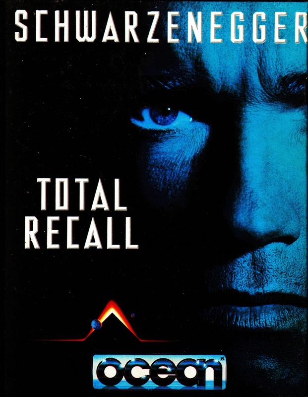
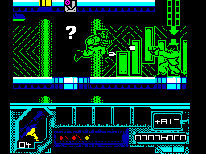

Total Recall


{kind=link}

| Publisher: | Ocean |
| Price: | £10.99 / £15.99 |
| Year: | 1991 |
| Source: | CRASH, Issue 86 |

‘We can remember it for you wholesale!’ hollers the Rekall Incorporated representative in Schwarzenegger’s futuristic film, Total Recall.
Remember it wholesale? I remember the preview for this and it was nothing like this finished version, which is a bit of a blessing as the old Total Recall wasn’t much cop!
Right, let’s try and get the plot straight: the line from the advertisement — ’You’re not you — you’re me’ — doesn’t exactly make things clear. In Total Recall, the you is Doug Quaid, a chap hounded by nightmares of a life on Mars. In an attempt to sort it out, Quaid visits Rekall Incorporated, a company that specialises in adventure holidays — not real ones but implanted memories of your perfect vacation.
In his chosen holiday, Quaid is a double-dealing spy on Mars but unexpected events make him suspect he may actually be a spy, and his current Quaid identity is an implanted memory. Desperate to sort himself out, Quaid goes to Mars, but the villain of the story, Richter, is hot on his tail.

Unless you’ve got a gun, of course (blam!)
Total Recall has five levels of packed gameplay which take you from Earth to Mars. There are two types of level: in odd-numbered levels, you, as Quaid, jump around multi-directional scrolling platforms, while in even-numbered ones you take to the streets in a horizontally scrolling car shoot-em-up. It’s quite an odd mix because you can ‘learn’ how to play the platform levels but you simply have to be a good shoot-’em-up player to succeed in levels two and four.
Level one is set in a large complex guarded by many of Richter’s henchmen, some of them armed. You must find the five objects you need to take to Mars. A gun and your mighty fists are your defence (remember to pick up extra ammo to keep your gun battle-ready). The complex is about five storeys high and constructed from platforms to leap between and lifts to take you between floors. It sounds a bit like any old platform game, doesn’t it?
But hold your horses, there are plenty of puzzles to work out too! Throughout the complex are switches, embedded in the floors. which make secret walls and floors appear or disappear. Not activating the right switch at the right time causes serious problems — you may have to waste time (yes, you’re playing against the clock!) retracing your steps to activate it, or worse still, fall into one of the acid pools, resulting in instant death. You only have one life to play with on this level but you can keep topping up your energy by collecting suitable icons.
Other trouble-makers include two different types of vertical laser beams. The yellow sort go on and off automatically, so careful timing is called for when hopping through. The purple sort can be deactivated for a limited time by stepping on a pressure pad.
Level one is a lot of fun and gives a real sense of achievement as you gradually discover more and more of the complex. The style of graphics is a bit odd for such a violent, action-packed movie tie-in: they’re all large and cartoony, but very, very good. The animation is smashing, especially Quaid’s death sequence: he explodes into a sort of gooey splat! Odd but good.
The playability’s set just right — the armed henchmen aren’t too hard to beat (especially with a good supply of ammo in the gun) so the game doesn’t become a naff beat-’em-up.
Enough of level one’s antics, let’s have a shufty at level two — the first of the two scrolling shoot-’em-ups. Quaid’s pinched a Jonnycab (a computerised taxi-like craft) and is en route to a derelict warehouse, in the hope it will provide him with a few helpful clues to his identity.
The objective is simple enough: just keep driving along the four-lane motorway killing off as many cars as possible. The energy bar, at the top right of the screen. continually diminishes, although it does receive a small top-up with every car shot down (except ambulances which, if shot. reduce your energy even further). Driving over an ’E’ icon completely replenishes the energy bar.
There’s not a time limit here, but you do have to go the distance. A purple arrow at the top left of the screen marks your progress. The action’s fast and gameplay’s tough but this section isn’t as enjoyable as level one because it doesn’t require as much thought. Graphics are okay but the isometric 3D effect is looking a bit old hat these days.
Level three now, and back to the platform gameplay of level one. Quaid’s discovered he’s actually someone called Hauser but he’s still being pursued by Richter’s men, who stand around on platforms hitting out as soon as he goes near. The gameplay’s trickier, with many more pitfalls than the first level, but the objectives are the same: explore, locate, don’t die etc. Survive that and you’re whizzed off to Mars and into another driving/shoot-em-up section.
The final level is set deep in Mars (that’s why its red. which makes it a strain on the eyes). It’s more of the platform gameplay, though the action is much quicker here, with armed guards everywhere! Your oxygen supply is continually draining away and can only be replenished by picking up oxygen cubes, though I was usually shot before the oxygen had a chance to run out!
That about wraps up the game and should you complete it you may even understand the storyline (if you do you’re a better man than I am!).
So, what can be said about Total Recall? Addictive isn’t the word — though it’s not a bad one to start with. So, it’s very addictive. The platform levels are superbly playable, as long as you concentrate. I’m not so struck on the shoot-em-up levels, they’re so risky, but at least you’re provided with three lives on those levels. Should you die on level three, four or five, there’s a Continue option after the Game Over message, which is very helpful.
The graphics for the first three levels are something special: bold, bright, detailed and — hurrah! — colourful! The animation’s great too: Quaid/Hauser has real power in his stride and when he hits a henchman, with either fist or bullet, the henchmen flies backwards, stumbling from the blow.
I loved the game, and I have the sneaking suspicion you will too. Don’t bother getting Rekall to remember it for you: go out and experience Total Recall for real!
RICHARD — 93%
For me, Total Recall was one of the best movies of 1990; it really pulled In the crowd: with its fast paced (and very violent) action. Now the computer game Is on the streets, you too can become big Arnie as he battle: through this multi-level Ocean extravaganza. The going’s tough, and for many games I fell victim to Quaid’s vicious adversaries. But the game’s so playable, you’re lucky I managed to tear myself away to write this comment! Presentation is as high as playability — my fave bit is the really neat title sequence. This is the second Ocean game I’ve played this month and the second I’ve awarded an accolade to. I think a big round of applause is called for! (Clap clap clap!)
MARK — 94%
RATING
A strange mix of gameplays but an overall winner!
| Presentation: | 94% |
| Graphics: | 93% |
| Sound: | 88% |
| Playability: | 93% |
| Addictivity: | 93% |
| Overall: | 94% |